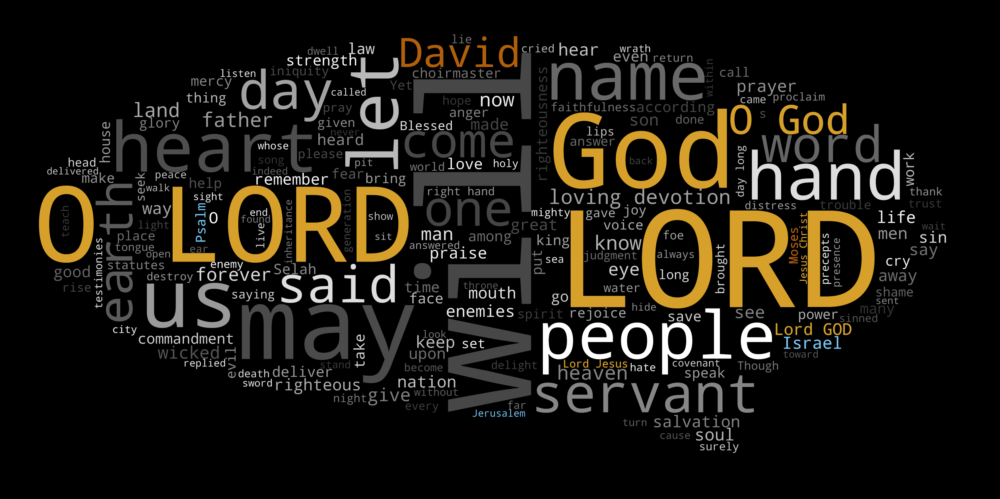
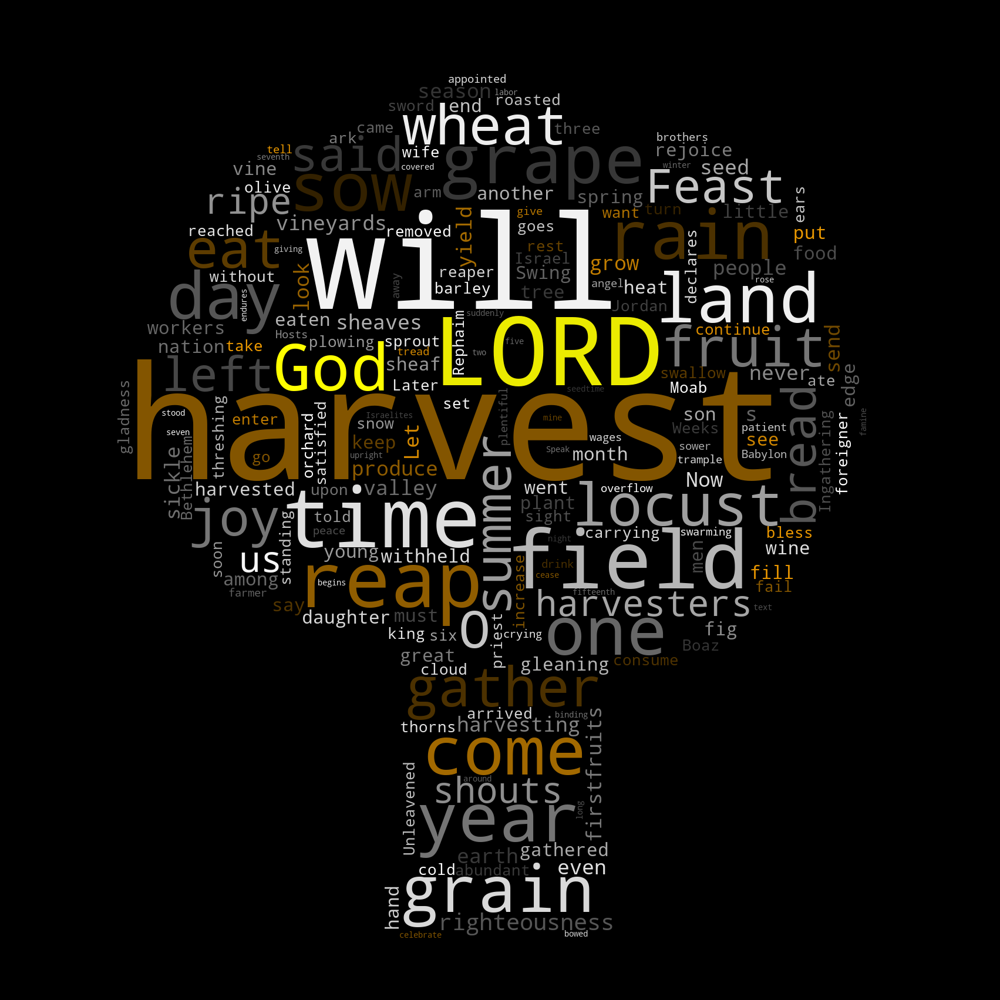

On this page you will find my experiments for navigating a collection of books like the Bible in alternative ways along with various data visualisations. All the examples make use of the Berean Standard Bible translation in English.
The entire Bible on a page coloured by instances/mentions of prayer. Black is a chapter containing a prayer, blue is a chapter where prayer is mentioned, and pink refers to answered prayer.

The contents of 270 prayers in the bible. [Source of verse references]

The contents of 70 verses in the bible mentioning harvest. [Source of verse references]